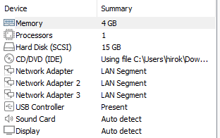
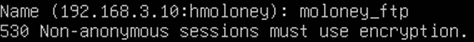

This small business environment includes a pfSense firewall, Ubuntu web
server, CentOS mail server, and Windows client machine(s).
The firewall interacts with the WAN, DMZ, and LAN segments with its three network interface
cards. The IP addresses set for the DMZ and LAN are 192.168.3.1 and 192.168.1.1 respectively.
The DMZ contains the web server and mail server with IPs 192.168.3.10 and 192.168.3.20.
The LAN devices receive their IPs dynamically. The firewall also features BIND DNS which is
configured to resolve hostnames to IPs within the network.
The web server uses the Linux, Apache, MySQL, and PHP stack based on an Ubuntu machine.
The mail server uses CentOS with postfix and dovecot.
PFSENSE SETUP
The three network interface cards are configured for each LAN segment. There is one for
the WAN, DMZ, and LAN.

The IPs have been manually configured for the DMZ (OPT1) and LAN.
LAMP STACK
I update Ubuntu and install Apache.
The Apache page routes to 192.168.3.10.
I install MySQL and PHP.
I make a directory to hold my wordpress configuration information.
I create a configuration file for my HTTP. I publish it and reload Apache.
I use randomly generated keys for security.
I create a new user with the password from above. I can now edit the
database Wordpress. I generate a key with OpenSSL instead. Now I can
configure the wordpress configuration to allow SSL.
I add another virtual host to redirect to https.
My site still says it's not secure, but that is because
it is a self-signed certificate.
FTP
I installed vsftpd to manage file transfers. I used the configuration file to set permissions and edited
the users to include my created ftp group. I also included the directory where my key is located. I
installed FileZilla and transferred an image.
I install vsftpd.
I add my user.
I add a password for my user.
I restart vsftpd.
I allocate certain ports to my FTP server and allow TCP traffic.
The connection is successful.
I use a certificate to encrypt the FTP traffic.
The key works.

I use FileZilla to transfer a file to my Wordpress.
BIND DNS
I use BIND DNS on pfSense GUI to create forward and reverse lookup zones. I first statically assign the
IP addresses for the servers in my demilitarized zone. I then use these addresses to map to domain names
with A records in the forward zone and PTR records in the reverse zone. I use the tool tracert to trace
the route to the web server to confirm that the DNS works properly.
Though I used 3.10-3.100 range, I change this later for the IPs I ended up choosing.
Here I set the static mappings of the IP addresses in my DMZ using their MAC addresses.
I install BIND and create my zones and add the views in to ensure BIND creates a configuration file.
I create A records for web, mail, and pfsense to resolve to their static mappings.
The following configuration is made for the forward zone:
I create PTR records to map the IP addresses to the domain name.
The following configuration file results:
I use the traceroute command to ensure the domain connects to the IP:
MAIL SERVER
I install postfix and dovecot packages to my CentOS server to give it the ability to communicate with
IMAP and POP3. I change the hostname for my server so I can configure the server in the mail client later.
I create an SSL certificate to add to my postfix configuration file. I also create another user on the server
and give them a password to log in to the mail client on the Windows machine. Finally, I install a mail client
on my Windows machine to receive emails from the primary mail account on the server.
I change the hostname.
I enable and start the services.

I edit the configuration file and uncomment the certificate and key file locations.
I add firewall rules on the mail server to allow SMTP.
I allow POP3 and IMAP through the firewall.
I create a new user and give the user a password.
I download Thunderbird on my Windows and log in with the user credentials.
I enable SSL and require a password.
I send an email from the mail server and receive it on the client end.
My network is now capable of Internet access, complete with a web server
and a mail server. The use of BIND allows for the servers to resolve for clients.
File transfer is also possible with FTPS.